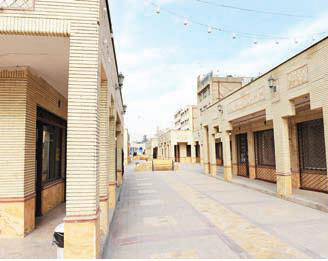

|
|
انحلال بازارچه ی خوداشتغالی بانوان مشهد و پاسخ مدیرعامل سازمان میادین و میوه و تره بار در این خصوص : « شهرداری وظیفه ای در مورد بانوان سرپرست خانوار ندارد و متولی حمایت از آنان بهزیستی است "
پنج شنبه14 بهمن 1389
این روزها در حالی که افزون بر نیمی از 54 غرفه ی بازارچه خاتون مشهد از زنان خوداشتغال (که عموماً سرپرست خانوار می باشند) بازپس گرفته شده، هیچ یک از مسئولین شهری پاسخگوی رنجها و نگرانی های این قشر آسیب پذیر نیستند. بازارچه خاتون که در سال 83 به نام بانوان خوداشتغال افتتاح گردید، بنا به اعتقاد رئیس کمیسیون خدمات شهری و محیط زیست شورای شهر مشهد، فاقد رونق اقتصادی است و سنخیتی بین اجناس بازار با سایر فروشگاه ها و مغازه های اطراف آن وجود ندارد. وی در پاسخ به شرایط بلاتکلیف زنان خوداشتغالی که کسب و کار خود در این بازارچه را از دست داده اند، می گوید: « قرار شده شهرداری فضایی را به عنوان بازار خوداشتغالی برای تولیدات خانگی افراد ایجاد کند تا بصورت چرخشی در روزهای مشخص تولیدات خود را عرضه کنند! »
وی تصریح می کند: « در بازار یاد شده، فضا بصورت چرخشی در اختیار تولیدکنندگان قرار می گیرد و تحت نظارت بهزیستی اداره خواهد شد» وی با اذعان به اینکه برای فروشندگان بازار خاتون نیز تمهیداتی اندیشیده شده است، می افزاید: پیش بینی شده در صورتی که تولیدکنندگان کفش که قرار است در بازار خاتون مستقر شوند، نیازمند فروشنده باشند، فروشندگان فعلی این بازار در اولویت قرار داشته باشند. وی اظهار میدارد: در بازار خاتون هیچ یک از بانوان فعلی ماندگار نخواهند شد و باید ظرف دو ماه آینده، غرفه ها را تحویل شهرداری دهند!
وی معتقد است بانوان شاغل در این بازار، تنها بانوان خودسرپرست و یا تولیدکننده شهر مشهد نیستند، ضمن آنکه شهرداری متولی حمایت از قشر مذکور نمی باشد.
مدیرعامل سازمان میادین میوه و تره بار و ساماندهی مشاغل شهری نیز در این خصوص می گوید: «شهرداری وظیفه ای در مورد سرپرست خانوار ندارد و متولی حمایت از آنان بهزیستی است! »
همچنین مسئولین شهری مدعی اند که تعداد زیادی از کسبه خاتون بجای تولیدات خودشان، اجناس چینی را به عرضه میگذارند و این با کارکرد تعریف شده برای بازار در تناقض است.

و اکنون جای این پرسش است در حالیکه بازارهای مصرفی در تسخیر کالاهای ارزان قیمت وارداتی از چین و دیگر کشورهاست، آیا براستی جایگاهی برای تولیدات کارگاه های کوچک اینچنین وجود دارد؟ پاسخ این پرسش، کارگاه های از رونق افتاده ی برخی از اهالی خاتون است. آن تولیدکنندگان پیشین، حالا فروشندگانی اند که با مساعدت ویژه مسئولین، در اولویت بکارگمارده شدن توسط تولیدکنندگان کیف و کفش قرار خواهند گرفت!
تغییر برای برابری پیش از نامه ی اعتراضی این بانوان را در همین زمینه منتشر کرده بود. این نامه را می توانید در این آدرس ببینید.